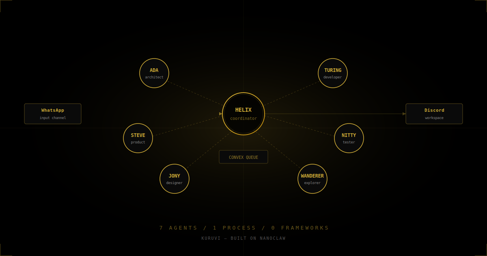
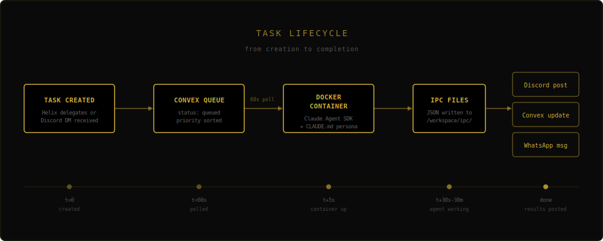

How I turned a simple WhatsApp bot into a self-organizing team of AI agents — each with its own identity, its own Discord presence, and its own specialty. No frameworks. No LangChain. Just files.
Two weeks ago I had a WhatsApp bot. Today I have a team.
Seven AI agents. Each with a name, a personality, a Discord identity. Ada the Architect designs systems. Turing the Developer writes code. Nitty the Tester breaks things. Steve thinks about product. Jony designs interfaces. Wanderer researches the internet. And Helix — the coordinator — delegates, monitors, and keeps the whole machine moving.
They pick up tasks from a shared queue. They post status updates in Discord. They hand work off to each other. They run in isolated containers where they can't see each other's files. And the entire system — every single line — was built on a 500-line open-source WhatsApp bot called NanoClaw.
No LangChain. No CrewAI. No AutoGen. No orchestration framework. Just files.
This is how.
NanoClaw's entire architecture fits in one sentence:
WhatsApp message → SQLite → Polling loop → Docker container → Claude Agent SDK → Response
One Node.js process. Five source files. You can read the whole thing in 8 minutes. That's not a marketing claim — I timed it.
Out of the box, you get:
CLAUDE.md files that survive across sessionsThat last one is the key. File-based IPC sounds primitive. It's the most important architectural decision in the entire system.
When a container agent wants to send a WhatsApp message, it writes a JSON file:
{
"type": "message",
"chatJid": "120363408887719416@g.us",
"text": "Task complete. Deployed to production."
}The host process polls the directory, reads the file, sends the message, deletes the file.
That's it. No WebSocket connections. No message brokers. No gRPC. No protocol buffers. A directory and some JSON files.
Why this matters:
Observable. ls /data/ipc/ada/tasks/ — you can see exactly what's pending. No log diving.
Debuggable. cat the file. Read it. Edit it. Replay it by copying it back. Try doing that with a WebSocket message.
Bulletproof. Atomic writes (temp file → rename) prevent corruption. If the host crashes mid-read, the file is still there on restart.
Language-agnostic. The container writes files. The host reads files. They don't need to agree on anything except JSON.
Everything I built on top — Discord, task delegation, agent-to-agent handoffs — uses this same primitive. Write a JSON file. The host picks it up.
NanoClaw's registered_groups.json was designed for WhatsApp groups. A mapping of chat IDs to folder names. I added two fields:
{
"__agent_ada__": {
"name": "Ada Agent",
"folder": "ada",
"trigger": "DISCORD_BOT",
"isAgent": true,
"agentType": "specialist"
}
}Same data structure. Same container runner. Same isolation. But now the container spawns for a task from a queue instead of a WhatsApp message.
Each agent gets three things:
A personality file. groups/ada/CLAUDE.md opens with: "Inspired by Ada Lovelace — the world's first computer programmer. You are Ada, the Architect." These aren't cosmetic. Ada approaches problems differently than Turing. She thinks in systems. He thinks in code.
An isolated workspace. groups/ada/, groups/turing/, groups/nitty/. Each has its own logs, files, memory. Agents can't see each other's work. Not because of permission checks — because the Docker container only mounts that agent's directory.
A Discord bot. Each agent has its own Discord bot token, its own identity, its own avatar. When Ada posts in #agent-workspace, it shows up as Ada. This sounds like a detail. It changes everything about how you interact with the system.
Agents need a way to receive work. I built Kuruvi — a Next.js app backed by Convex (real-time database).
The schema is three tables:
tasks: title, description, agent, status, priority, artifacts
agents: name, specialization, tasksCompleted
activity: taskId, agentName, action, timestampThat's the entire task management system. Tasks flow through four states: queued → in_progress → completed (or blocked).
On the NanoClaw side, a poller runs every 60 seconds:
status: "queued"in_progress, post to Discordcompleted, post resultOne task per agent per cycle. Fresh session per task — no context bleeds between independent work.
Discord serves two purposes.
The workspace. All agents post to #agent-workspace. When Turing picks up a task:
🔄 Picking up task: Fix auth redirect bug
Priority: high · Task ID:j57...
When he finishes:
✅ Task complete: Fix auth redirect bug
Pushed fix tomain, deployed to production.
When something breaks:
❌ Task failed: Fix auth redirect bug
Error: Container timeout after 30 minutes
Direct messages. Users can DM any agent bot. Helix handles DMs immediately (spawns a container). Specialists queue them as tasks and respond asynchronously.
The Discord integration uses the same IPC primitive. Containers write:
{
"type": "discord_send_message",
"channelId": "1470177644858441809",
"content": "✅ Task complete: Fix auth bug"
}The host picks it up and sends it through the correct bot client. Ada's messages come from Ada's bot. Turing's from Turing's.
Helix is the coordinator. He runs in the main group with access to the entire project, all group folders, and the task database. The other six are specialists who only see their own workspace.
Here's the thing that surprised me: Helix's orchestration logic is just English in a CLAUDE.md file.
## Orchestration Workflow
1. Monitor all agent completions
2. Auto-kick next task when one completes
3. Update user via WhatsApp on each completion
4. Don't wait for Helix queue — agents report to their own queuesNo state machines. No DAGs. No workflow engine. Claude reads these instructions and follows them. When Turing finishes the auth fix, Helix sees the completion in Convex and kicks a test task to Nitty. When Nitty reports back, Helix verifies the screenshots and tells me on WhatsApp.
The coordinator pattern works when the coordinator is smart enough to follow instructions. Claude is.
No orchestration framework. The orchestration is 20 lines of English in a markdown file.
No inter-agent protocol. Agents don't talk to each other. They write tasks to a queue. The coordinator reads completions.
No agent runtime. Each agent is Claude Agent SDK in a Docker container with a CLAUDE.md file. That's it.
No configuration system. Want to change an agent's behavior? Edit its CLAUDE.md. Want to add a new agent? Add an entry to a JSON file, create a Discord bot, set an env var.
The temptation to build infrastructure is strong. Resist it. Every abstraction you add is a thing you have to debug at 2am when an agent isn't responding.
The Discord bots all died silently today. Promise.all was launching 7 bot logins. One failed. All died. The Convex task poller was nested inside the same try/catch, so it died too. Tasks stopped being picked up. No errors surfaced anywhere useful. I fixed it with Promise.allSettled and moved the poller to start independently. Took 30 minutes of log diving.
Agents repeat themselves. When the session transcript gets too large, Claude starts looping. I added auto-rotation at 5MB, but it's a blunt instrument.
Fresh sessions mean no institutional memory. Each task starts from zero. The agent reads its CLAUDE.md but doesn't remember last week's conversation about the same codebase. The CLAUDE.md file is the only bridge, and it's manually maintained.
Container startup isn't instant. Each task spins up a Docker container, which takes 3-5 seconds. For a human DMing an agent, that's noticeable. For batch tasks, it's fine.
The multi-agent discourse is drowning in frameworks. LangGraph gives you stateful graphs. CrewAI gives you role-based agents. AutoGen gives you conversational patterns.
All of them are solving problems you don't have yet.
The real insight isn't that you need a framework to coordinate agents. It's that you don't. Claude is smart enough to follow instructions written in English. Docker is good enough to isolate agents. A JSON file in a directory is good enough for IPC. A 3-table database is good enough for a task queue.
Start with the simplest thing that works. A single process. A few files. Agents that write JSON and a host that reads it. Add complexity only when the simple thing breaks.
That's the blueprint. Fork NanoClaw. Add a CLAUDE.md. Write a JSON file. You have an agent.
Add six more and you have a team.
Kuruvi is built on NanoClaw, an open-source personal Claude assistant. The name means "small bird" in Tamil — because the best systems are light enough to fly.
I built a team of 7 AI agents that delegate tasks to each other, post updates in Discord, and run in isolated containers.
No LangChain. No CrewAI. No framework at all.
Just JSON files in a directory.
Here's the entire blueprint: 🧵
📎 Attach: kuruvi-hero.svg
It started with a 500-line open source WhatsApp bot called NanoClaw.
One process. Five files. Claude runs in a Docker container, reads a CLAUDE.md file for memory, and writes JSON files to talk to the host.
That's the entire platform. Everything else was built on top.
The secret ingredient: file-based IPC.
When an agent wants to send a Discord message, it writes this to a file:
{"type": "discord_send_message",
"channelId": "...",
"content": "Task complete."}The host polls the directory. Reads. Acts. Deletes.
No WebSockets. No gRPC. No message broker.
To go from 1 agent to 7, I added two fields to a JSON config:
"isAgent": true,
"agentType": "specialist"Same container runner. Same isolation. Each agent gets:
• A CLAUDE.md personality file
• An isolated workspace (can't see other agents' files)
• Its own Discord bot identity
The agents:
🏗️ Ada — system architect
💻 Turing — developer
🎯 Steve — product visionary
🎨 Jony — designer
🔍 Nitty — QA tester
🌍 Wanderer — web researcher
⚡ Helix — coordinator (delegates to all of them)
Each named after a computing legend. Each with a distinct approach to problems.
The task queue is 3 Convex tables:
• tasks (title, agent, status, priority)
• agents (name, specialization)
• activity (audit trail)
A poller runs every 60s. Picks one task per agent. Spawns a Docker container. Posts results to Discord.
That's the orchestration. All of it.
📎 Attach: kuruvi-task-flow.svg
Here's the part nobody talks about:
Helix's orchestration logic is literally written in English in a markdown file:
"Monitor all agent completions. Auto-kick next task when one completes. Update user via WhatsApp."
No state machines. No DAGs. Claude just... follows instructions.
What I deliberately didn't build:
❌ No orchestration framework
❌ No inter-agent protocol
❌ No agent runtime
❌ No configuration system
Want to change an agent's behavior? Edit a markdown file.
Want to add a new agent? Add a line to a JSON file.
The honest failures:
• All 7 Discord bots died silently because Promise.all killed them all when one failed
• Agents repeat themselves when sessions get too large
• No institutional memory between tasks
• Container startup takes 3-5s (noticeable for DMs)
Shipped anyway.
The full blueprint — with code snippets, architecture diagrams, and all the details I couldn't fit in a thread:
→ [LINK TO ARTICLE]
Built on NanoClaw (open source): github.com/gavrielc/nanoclaw
The name "Kuruvi" means "small bird" in Tamil. The best systems are light enough to fly.